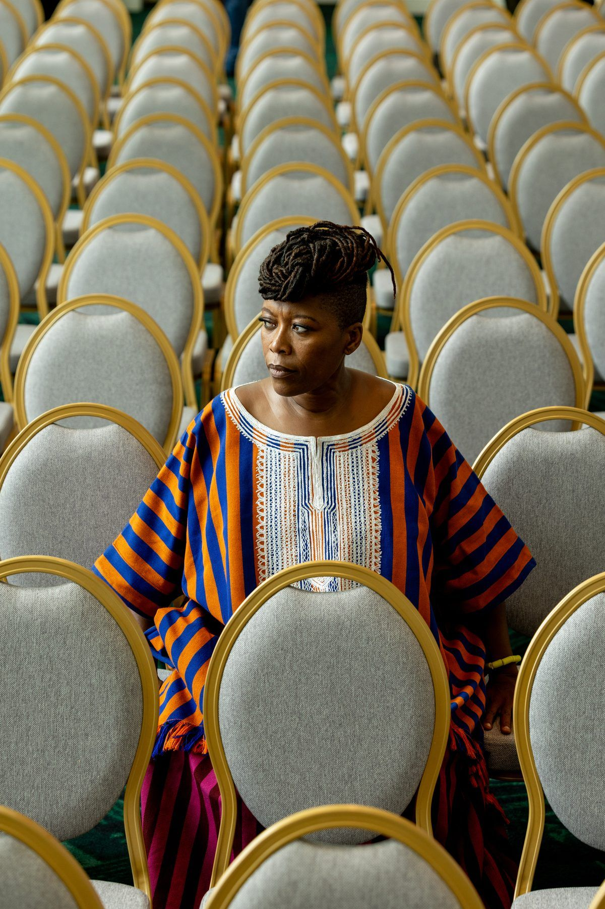

La fondatrice
Georgiana
Viou
De Cotonou au monde, une cuisine, une parole et un regard qui reviennent toujours à celles qui font vivre les marchés.
Un parcours, une source
Cotonou, toujours au centre
Native de Cotonou, Georgiana Viou grandit avec les odeurs, les voix et les gestes du marché. Très tôt, la cuisine lui apprend que nourrir est une manière de raconter : un territoire, une famille, des saisons et les personnes qui les relient.
Son parcours la conduit en France, où elle affirme une écriture culinaire personnelle, libre et profondément habitée par le Bénin. Cheffe, autrice et passeuse, elle fait dialoguer les produits, les souvenirs et les savoir-faire pour donner à chaque table une portée sensible.
En 2023, son restaurant Rouge, à Nîmes, est distingué d’une étoile Michelin. Cette reconnaissance ne clôt rien : elle rend encore plus visible une vision de la gastronomie faite d’hospitalité, de mémoire et de transmission.
Les lignes de force
Une cuisine qui relie
- 01
Hospitalité
Faire de la table un espace ouvert, où les histoires circulent autant que les plats.
- 02
Transmission
Écrire, cuisiner, prendre la parole : partager les gestes et les récits qui construisent une mémoire commune.
- 03
Retour
Revenir au Bénin non comme un détour, mais comme un point d’ancrage et une promesse d’action collective.
La genèse
Les Patronnes, rendre visible ce qui tient déjà debout
Les Patronnes naît de cette trajectoire. En regardant les femmes des marchés béninois, Georgiana Viou reconnaît des savoirs, des présences et une force économique qui façonnent la ville au quotidien. Le projet crée des images, des rencontres et des repas pour leur donner l’espace qu’elles méritent.
La photographie, la mode et la gastronomie deviennent alors des outils de reconnaissance. Ensemble, elles racontent une histoire contemporaine du Bénin : une histoire portée par celles qui travaillent, transmettent et inventent chaque jour.
← Retour sur À propos